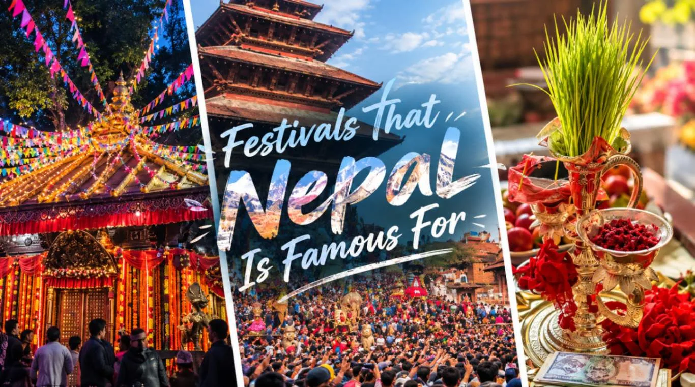
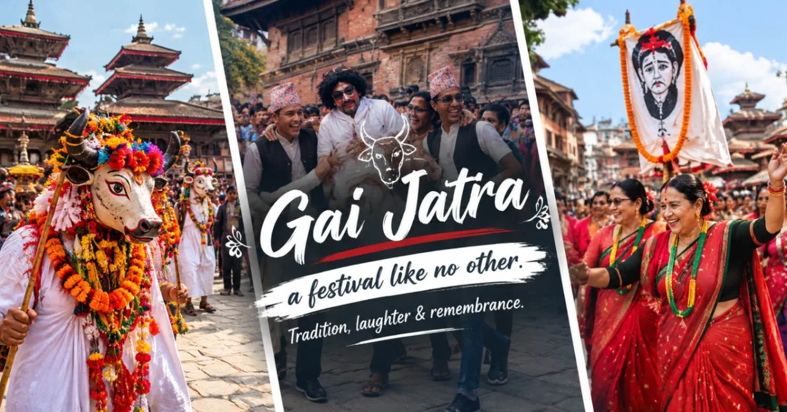

1. The Living Calendar of Nepal: Where Gods Walk the Streets
There is an ancient Himalayan adage that in Nepal, "there are more festivals than days in the calendar, more temples than houses, and more gods than people." While many historic cultures preserve their heritage solely inside museum vitrines, Nepal’s cultural traditions remain vibrant, sensory, and woven into daily community existence.
What makes Nepali festivals globally unique is the seamless syncretism between Hinduism, Vajrayana Buddhism, and ancient Animist/Tantric traditions. A Newari Buddhist courtyard will joyfully worship Hindu deities, while Hindu devotees regularly bow before Buddhist stupas like Swayambhunath and Boudhanath. Deities like Machhindranath, Bhairava, and the Kumari are revered by both faiths alike.
Throughout the year, city streets transform into ceremonial stages. Multi-story wooden chariots are hauled by hundreds of barefoot devotees through cobblestone alleys, sacred masks inhabited by ancestral spirits whirl in hypnotic firelit courtyards, and houses are lit by thousands of glowing terracotta oil lamps.
Unlike the Western Gregorian calendar, religious life in Nepal is governed by traditional lunar systems: the Bikram Sambat (BS) solar-lunar calendar, the indigenous Nepal Sambat of the Kathmandu Valley, and the Tibetan Buddhist lunar calendar in the high Himalayas. Consequently, annual festival dates shift by 10 to 25 days each year on the Western calendar. If you wish to witness a specific festival, consult with your local agency to verify the exact auspicious lunar dates.
2. Comprehensive Master Calendar: Major Festivals of Nepal by Month & Region
Here is a comprehensive overview of Nepal’s premier religious festivals, their lunar timing, primary geographic epicenters, and recommended traveler experiences:
| Festival Name | Approx. Month | Tradition | Primary Locations | Core Ritual & Highlight |
|---|---|---|---|---|
| Maha Shivaratri | February – March | Hindu | Pashupatinath Temple, Kathmandu | Night of Shiva, 100,000+ visiting sadhus, sacred bonfires & chants |
| Holi (Fagu Purnima) | March | National / Hindu | Kathmandu, Patan, Pokhara | Festival of Colors, street music, water balloons, spring joy |
| Bisket Jatra | Mid-April (Nepali New Year) | Newari / Hindu | Bhaktapur Durbar Square & Thimi | Massive chariot tug-of-war, erection of 55-cubit sacred pole |
| Buddha Jayanti | April – May | Buddhist | Lumbini, Boudhanath, Swayambhunath | Birth, enlightenment & nirvana of Buddha; butter lamps & peaceful circumambulations |
| Tiji Festival | May | Tibetan Buddhist | Lo Manthang, Upper Mustang | 3-day ancient masked Cham dances in walled medieval kingdom |
| Rato Machhindranath Jatra | April – June | Newari Syncretic | Patan (Lalitpur) | Month-long procession of a 60-foot wooden chariot through ancient streets |
| Gai Jatra (Cow Festival) | August | Newari | Kathmandu, Bhaktapur, Patan | Honoring departed ancestors with humor, satire, costumes, and cows |
| Teej (Haritalika) | August – September | Hindu (Women) | Pashupatinath & temple squares | Women fasting in brilliant crimson sarees, dancing, praying for marital bliss |
| Indra Jatra (Yenya) | September | Newari / Tantric | Kathmandu Durbar Square | Procession of Living Goddess Kumari, Lakhey demon dance, Bhairav liquor feast |
| Dashain (Bijaya Dashami) | September – October | National Hindu | Nationwide (Kathmandu & villages) | 15-day triumph of Durga; red tika & jamara blessings, giant bamboo swings, kites |
| Tihar (Deepawali) | October – November | National Hindu | Nationwide | 5 days of lights, honoring crows, dogs, cows, brothers; rangoli & oil lamps |
| Chhath Puja | October – November | Terai Hindu | Janakpur, Rani Pokhari, river banks | Devout solar worship at dusk and dawn standing immersed in sacred waters |
| Mani Rimdu | October – November | Sherpa Buddhist | Tengboche Monastery, Everest | 19-day Vajrayana festival with 3 days of masked sacred dances in high Himalayas |
| Losar (Tibetan New Year) | January – February | Sherpa / Tamang / Tibetan | Boudhanath, Solukhumbu, Manang | Tibetan New Year celebrations, prayer flags, traditional chang beer, and butter sculpting |
3. Dashain: The Grandest 15-Day Festival of Victory & Family Reunions
Dashain (also called Bijaya Dashami or Bada Dashain) is the longest, most auspicious, and most celebrated festival in Nepal. Spanning fifteen days across late September or October, Dashain commemorates the ultimate victory of the multi-armed goddess Durga over the buffalo demon Mahishasura, symbolizing the triumph of divine righteousness (*dharma*) over darkness and evil.
Beyond its religious significance, Dashain is Nepal’s profound season of family reunion. Millions of Nepalis working in Kathmandu or abroad travel back to their ancestral mountain villages. Key ceremonial milestones include:
- Ghatasthapana (Day 1): Holy water is placed in a sanctified brass vessel, and barley seeds are planted in dark sand inside the home puja room. Over nine days, these sprout into sacred, luminous yellow shoots known as jamara.
- Fulpati (Day 7): The historic procession carries royal flower offerings from the historic Gorkha Palace all the way into Kathmandu’s Hanuman Dhoka palace.
- Maha Ashtami & Navami (Days 8 & 9): Temples across the country hold solemn pujas. Tools, machinery, cars, and agricultural implements are sanctified with vermillion and flower garlands.
- Vijaya Dashami (Day 10 - The Climax): Family elders apply the sacred tika—a crimson mixture of unbroken rice grains, yogurt, and vermillion powder—onto the foreheads of younger relatives, placing yellow jamara behind their ears accompanied by Sanskrit blessings for prosperity, health, and longevity.
Cultural Delights to Witness
- Bamboo Swings (Linge Ping): Massive 30-foot bamboo swings erected on village knolls. It is believed that touching your feet to the sky on Dashain cleanses sins.
- Rooftop Kite Flying: Skies filled with colorful paper kites fluttering against mountain backdrops, signaling to the gods that the monsoon is over.
- Feasting: Extravagant feasts of spiced mutton (khasi), sel roti, spiced potatoes (aloo ko achar), and home-brewed festive spirits.
Traveler Logistics During Dashain
- Public Transport Shutdowns: Buses and long-distance jeeps are packed to capacity days before Vijaya Dashami as the entire country migrates home.
- Government Offices Closed: Permit offices, banks, and non-essential businesses close for 4 to 6 days.
- Eerie Quiet in Kathmandu: Kathmandu’s usually frantic streets become peaceful and quiet, offering rare photography opportunities of empty heritage squares.
4. Tihar (Deepawali): The Five-Day Festival of Lights & Animal Veneration
Falling approximately three weeks after Dashain in late October or November, Tihar (known as Deepawali or Yamapanchak) is arguably the most visually enchanting festival in Nepal. Over five consecutive days, human relationships with nature, animals, and the divine are honored in a tapestry of flickering oil lamps, marigold garlands, and colorful ground mandalas.
The five days of Tihar follow an extraordinary spiritual progression:
- Day 1: Kag Tihar (Worship of the Crow): Crows, considered messengers of Yama (the god of death), are fed grains and sweetmeats on rooftops to ward off sorrow and bereavement.
- Day 2: Kukur Tihar (Worship of the Dog): In one of Nepal’s most heartwarming customs, dogs—celebrated for their unyielding loyalty and guardianship—are adorned with bright golden marigold garlands, blessed with red vermillion tika, and treated to gourmet feasts. Even street dogs throughout Kathmandu are honored and pampered.
- Day 3: Gai Tihar & Laxmi Puja (The Cow & Goddess of Wealth): In the morning, cows (sacred embodiment of motherhood and bounty) are worshipped. In the evening, the entire country is transformed into a sea of light. Homes and shop fronts are illuminated with thousands of small terracotta oil lamps (diyas), candles, and fairy lights to welcome Goddess Laxmi. Intricate circular flour-and-sand patterns called rangoli adorn doorsteps.
- Day 4: Govardhan Puja & Mha Puja: Oxen are worshipped for their agricultural toil. In the Newar community, this evening marks Mha Puja (worship of the inner self), a unique philosophical ritual honoring the sacred soul within oneself.
- Day 5: Bhai Tika (The Sister-Brother Bond): Sisters bless their brothers with seven-colored tika (saptarangi tika), encircling them with blessed water and placing unbreakable walnut garlands to protect them from Yama. Brothers reciprocate with heartfelt gifts and blessings.
During the evenings of Tihar, groups of lively youth sing melodious traditional folk carols from doorstep to doorstep—girls singing Bhailo and boys singing Deusi—bringing music, laughter, and fireworks to every street corner.
5. Holi (Fagu Purnima): The Festival of Colors, Water & Spring Joy
Celebrating the end of winter and the rebirth of nature, Holi (Fagu Purnima) falls on the full moon day of Falgun (late February or March). Commemorating the miraculous survival of young devotee Prahlad from the demonic fire of Holika, Holi is an explosion of uninhibited joy, color, and music.
In Kathmandu, Patan, and Pokhara, thousands of locals and international travelers pour into historic Durbar Squares:
- The Atmosphere: Friends and strangers greet one another with warm cries of "Holi Hai!" before dusting cheeks with vibrant gulal (organic dry powders in crimson, cobalt, saffron, and magenta) and spraying water from squirt guns (pichkaris) or water balloons (lolas).
- Live Music & Concerts: Durbar Squares host live acoustic bands, traditional drum ensembles (madal and dhimay), and energetic open-air celebrations.
- Sensible Traveler Tips for Holi:
- Wear inexpensive white cotton clothes that you are happy to discard afterwards.
- Apply coconut oil or moisturizer to your skin and hair before stepping outside—this makes washing color off dramatically easier.
- Protect your eyes with sunglasses and your smartphone inside a waterproof sealed ziplock case.
- If you prefer to celebrate gently, participate in organized hotel or private courtyards rather than dense public street scrums.
6. Indra Jatra & The Chariot of the Living Goddess Kumari

Held in September, Indra Jatra (known locally as Yenya) is the grandest street festival of the Kathmandu Valley’s Newar civilization. Lasting eight days, it honors Lord Indra, the Vedic king of heaven and harbinger of rain, thanking him for the bountiful monsoon harvest while honoring ancestors who passed away during the year.
Indra Jatra is one of the only times of the entire year when the Kumari (the Living Goddess of Kathmandu) emerges from her sacred palace:
- The Royal Chariot Procession: The young royal Kumari, dressed in resplendent red ceremonial robes and wearing the sacred third eye painted upon her brow, is borne through the ancient quarter of Kathmandu inside a massive golden wooden chariot pulled by hundreds of barefoot men. Her chariot is accompanied by secondary chariots carrying living representations of Ganesh and Bhairav.
- The Terrifying Majipa Lakhey: One of Nepal’s most thrilling masked dances. A demonic deity with wild bulging eyes, flaming red hair, and long fangs dances frantically through crowd-lined alleys, leaping to the thunderous cadence of traditional Newari brass drums.
- The Open Mouth of Sweta Bhairav: During the festival nights, the wooden shutters covering the colossal gilded mask of Sweta Bhairav in Durbar Square are opened. A pipe installed in the god’s mouth pours consecrated rice beer and liquor to waiting crowds of devotees below.
7. Maha Shivaratri: The Night of Lord Shiva at Sacred Pashupatinath
Occurring on the moonless fourteenth night of the dark fortnight in Magh (February or March), Maha Shivaratri ("The Great Night of Shiva") is the most spiritually intense Hindu festival in Nepal. The epicenter is the UNESCO World Heritage Pashupatinath Temple, one of the four holiest Shaivite pilgrimage sites on the Indian subcontinent.
Over a million pilgrims, sadhus, and ascetics travel from across Nepal and India to venerate Lord Shiva at the sacred Bagmati River:
- The World of the Sadhus: Thousands of wandering holy men—including ash-smeared Naga Babas (naked ascetics), dreadlocked yogis, and Aghoris—camp across Pashupatinath’s open courtyards. They sit beside sacred bonfires (dhuni), chant mantras, and impart spiritual blessings.
- Atmosphere of Devotion: The scent of sandalwood, burning juniper, and sacred smoke fills the cool night air. Chants of "Om Namah Shivaya" resonate from sunset to dawn as devotees queue patiently for miles across the temple bridges to pour milk and bael leaves over the sacred four-faced Shiva Lingam inside the inner temple sanctum.
While non-Hindus are not permitted into the inner gold-roofed pagoda sanctum of Pashupatinath, the opposite bank of the Bagmati River, the sacred terraces, and the surrounding Gorakhnath hills are fully open to all international visitors. Maintain quiet respect, ask permission before photographing sadhus, and be prepared for dense crowds.
8. Buddha Jayanti: Celebrating the Birth, Enlightenment & Parinirvana in Lumbini & Swayambhu
Falling on the full moon day of Baishakh (April or May), Buddha Jayanti celebrates the three paramount milestones in the life of Gautama Buddha: his birth, his attainment of supreme enlightenment beneath the Bodhi tree, and his final departure into Parinirvana.
Celebrations in Nepal radiate from two sacred centers:
- Lumbini (The Birthplace): In the southern Terai plains, where Queen Maya Devi gave birth to Prince Siddhartha in 623 BCE, pilgrims from across Thailand, Myanmar, Japan, Sri Lanka, and Tibet gather at the sacred pond, the Maya Devi Temple, and the ancient Ashoka Pillar for meditation, prayers, and silent candlelit walks.
- Boudhanath & Swayambhunath (Kathmandu): In the capital, the colossal whitewashed dome of Boudhanath Stupa is decorated with fresh strings of colorful lung-ta prayer flags. Thousands of monks in maroon robes, Tibetan elders spinning handheld prayer wheels, and international visitors circumambulate the stupa clockwise, chanting Om Mani Padme Hum, while thousands of golden butter lamps are lit as darkness falls.
9. Mountain & Himalayan Buddhist Festivals: Mani Rimdu & Tiji Festival

While the mid-hills celebrate Hindu festivals, Nepal’s high-altitude trans-Himalayan valleys are home to profound Vajrayana Buddhist monastic festivals that have endured for centuries:
Tiji Festival (Upper Mustang · May)
Celebrated in the 15th-century walled capital of Lo Manthang, the 3-day Tiji Festival (Tenchi) commemorates the victory of Dorje Jono over a demon who brought drought and famine upon the kingdom. Monks of the Chhoedhe Monastery dress in silk robes, brocade capes, and fierce animal masks, performing dramatic Cham dances to the resonance of long copper horns (dungchen) and cymbals. Aligning your trek with Tiji allows you to witness the former King of Mustang attending sacred ceremonies in full royal regalia.
Mani Rimdu (Everest Region · October/November)
Celebrated at the iconic Tengboche Monastery (3,860m) in the shadow of Mount Everest and Ama Dablam, Mani Rimdu is the most significant annual religious event for the Sherpa community. Over 19 days of monastic prayer, lamas empower sacred sand mandalas and consecrated pills. The festival culminates in three days of public masked dances in the monastery courtyard, blessing the high Khumbu valley and driving away negative obstacles for all sentient beings.
10. Gai Jatra: The Newari Festival of Cows, Satire & Healing from Grief

Originating in the 17th century under King Pratap Malla, Gai Jatra ("The Festival of Cows") is one of the world’s most poignant and psychologically brilliant cultural traditions. When the King’s beloved queen sank into inconsolable grief following the tragic death of their young prince, the King offered a reward to anyone who could make her laugh.
He ordered every family who had lost a loved one during the previous year to lead a decorated cow through the city. Recognizing that every household shared the sorrow of mortality, the queen realized she was not alone. To further cheer her, townspeople dressed in satirical costumes, cracked jokes, and performed comedic skits.
Today, Gai Jatra is celebrated every August across Kathmandu, Bhaktapur, and Patan:
- Young children dressed whimsically as cows, holy sadhus, and mythological heroes parade through the streets, accompanied by traditional horn ensembles.
- Newspapers publish satirical political cartoons, stand-up comedy specials take over theaters, and the LGBTQ+ community organizes Nepal’s vibrant annual Pride Parade through the city center.
11. Bisket Jatra: The Raucous New Year Chariot Tug-of-War in Bhaktapur
Celebrated mid-April in the ancient brick city of Bhaktapur, Bisket Jatra marks the arrival of the Nepali Solar New Year (Baishakh 1). Unlike solemn prayer events, Bisket Jatra is an exhilarating, adrenaline-fueled spectacle of community rivalry and ancient engineering:
- The Chariot Tug-of-War: A towering multi-tiered wooden pagoda chariot dedicated to the fierce god Bhairava is hauled through the narrow stone streets by hundreds of young men from upper and lower Bhaktapur, competing in a massive, cheering tug-of-war to pull the chariot into their respective quarters.
- Erection of the 55-Cubit Pole (Yasin): In the stone plaza of Khalna Tole, an enormous 80-foot ceremonial tree trunk representing a sacred cosmic pillar is erected using brute physical force and ropes. On New Year’s Day, it is deliberately crashed to the ground to symbolize the slaying of two serpent demons and the renewal of cosmic vitality.
- The Tongue-Piercing Ritual: In the nearby village of Bode, a chosen local volunteer has his tongue pierced with an eight-inch iron needle in a miraculous demonstration of devotion, parading through town carrying an oil lamp without showing signs of pain or blood.
12. Teej & Chhath Puja: Women’s Devotion & Terai Sun Worship
Two regional and gender-specific celebrations illustrate the deep diversity of Nepal’s spiritual landscape:
Haritalika Teej (August / September)
Teej is Nepal’s premier celebration of womanhood. Hindu women fast for 24 hours (often without drinking water) for the longevity of their husbands, or to pray for an auspicious union. Dressed in radiant scarlet, green, and golden sarees, adorned with glass bangles (chura) and beaded necklaces (pote), thousands of women gather at Pashupatinath Temple to dance, sing traditional folk songs, and share celebratory feasts of sweet treats (dar).
Chhath Puja (October / November)
Celebrated primarily in the southern plains (Terai) of Nepal—most spectacularly in the sacred city of Janakpur and along Kathmandu’s Bagmati riverbanks—Chhath Puja is dedicated to Surya, the sun god. Devotees observe strict multi-day fasts, standing waist-deep in water at sunset and dawn to offer clay baskets of sugarcane, coconuts, and traditional rice cookies (thekua) to the sun, thanking the cosmos for sustaining life on Earth.
13. Cultural Etiquette, Photography Ethics & Responsible Participation
International travelers are warmly welcomed at nearly all public festival celebrations in Nepal. However, practicing mindful cultural etiquette ensures your presence remains respectful:
- Always Walk Clockwise: When circumambulating temples, stupas, chortens, or shrine sanctums, always move in a clockwise direction (*pradakshina*), keeping the sacred structure on your right shoulder.
- Modest Temple Attire: Cover shoulders and knees when visiting temples. Remove your shoes, sunglasses, and leather belts/wallets before entering Hindu temple precincts.
- Accepting Tika & Prasad: When offered holy vermillion tika or sweet food offerings (*prasad*) by priests or family elders, receive it with your right hand, supporting your right elbow with your left hand as a gesture of reverence.
- Photography Ethics: While festival street processions are public spectacles, always ask permission before taking close-up portraits of devotees, elderly locals, or monks. Photography of cremations at Pashupatinath’s ghats is strictly disrespectful and offensive.
14. Travel Logistics, Booking Ahead & Trail Impacts During Festivals
Traveling during major festivals brings extraordinary cultural rewards, but requires foresight and careful planning:
Urban Impact (Kathmandu & Cities)
- Transport Bookings: Intercity buses and domestic flights sell out weeks before Dashain and Tihar. Book tickets well in advance.
- Office Closures: Government offices (including TIMS and Restricted Area Permit offices) close during key Dashain days. Arrange permits ahead of the holidays.
- Hotel Demand: Popular boutique heritage hotels in Bhaktapur, Patan, and Lo Manthang book out 6 months ahead for Bisket Jatra and Tiji.
Trekking Trail Impact
- Guide & Porter Availability: Many guides and porters prefer to spend Vijaya Dashami with their families. Always verify holiday availability with your trekking agency.
- Festive Atmosphere on Trail: Teahouses celebrate with small flower garlands, festive music, and complimentary festival sweets for trekkers.
- Uninterrupted Flights: Mountain flight hubs (Lukla, Pokhara) continue operations as weather permits, even during major national holidays.
Frequently Asked Questions About Experiencing Festivals in Nepal
Select a category below to explore expert answers to the most common questions travelers ask about Festivals in Nepal:
General & Planning

Ready to Experience the Himalayas?
Whether you are preparing for high-altitude trekking, cultural circuits, or alpine summit expeditions, start planning a bespoke journey tailored to your fitness, travel season, and style.